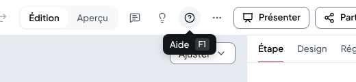
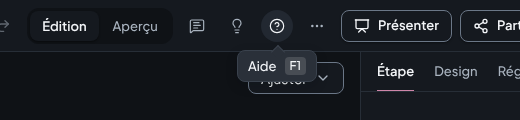

Lot L44 · Reprise UI
Infobulles
Livré (f62c292) et conforme : bulle sombre, flèche vers l’icône, raccourci en pastille, jamais coupée. 849 boutons à icône vérifiés sur 97 pages, aucun sans nom.
Rendu livré, en clair et en sombre

